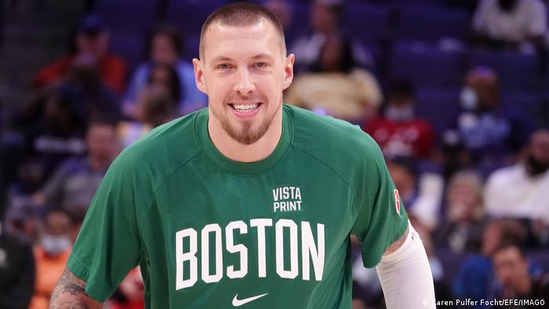
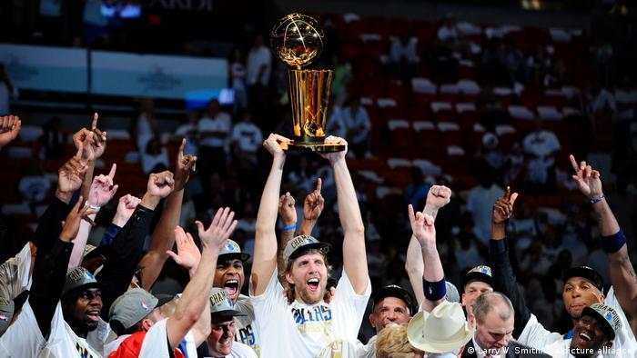
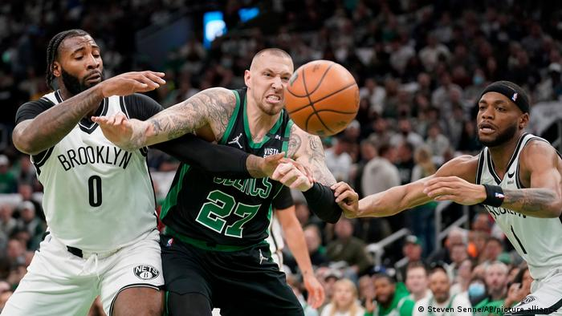
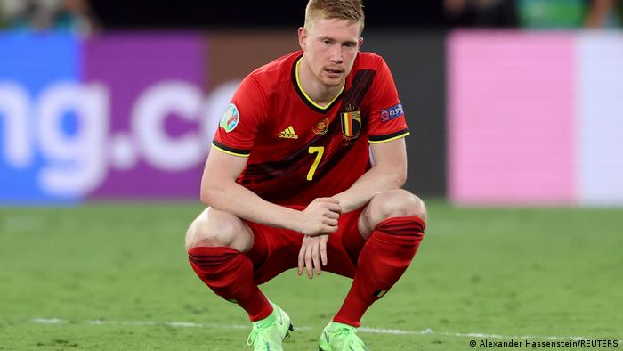
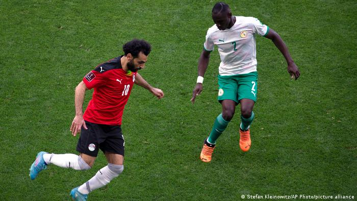

SPORTS
Daniel Theis of the Boston Celtics: 'NBA Finals are a childhood dream'
Daniel Theis is just the third German to play in the NBA Finals. The center, whose Boston Celtics are facing the Golden State Warriors for the title, is a team player capable of playing an important role when needed.

The last time a German appeared in the NBA Finals was in 2011, when Dirk Nowitzki led the Dallas Mavericks to the title. Back then, Daniel Theis was a 19-year-old playing for SG Braunschweig in Germany's second division alongside Dennis Schröder — two Germans whose paths would cross later in their careers.
Speaking to DW, Theis recalled losing sleep as Nowitzki led the Mavs to the 2011 NBA title, beating the Miami Heat 4-2. With the games starting at 3 a.m. German time, Theis would make sure he caught the second half by setting his alarm clock "for 4:45 or 5 o'clock."
Now 30, Theis has himself made it to the NBA Finals, as his Boston Celtics face Steph Curry and the Golden State Warriors — something he described as "a childhood dream" that he still couldn't quite believe.
Nowitzki's praise
When Theis first arrived in Boston in 2017, Nowitzki was in the home stretch of his 21-year NBA career. The Mavericks legend always closely followed the journeys of his fellow Germans who made it to the world's top basketball league. The MVP of the 2011 Finals described the 6'9" (2.06 meters) Theis, who can play center or as a power forward, as "a big guy" who is "quite athletic, fast and clever" and "gets to the basket well."

While Nowitzki was a superstar, the face, heart, and soul of the Mavs all rolled into one, Theis is eighth or ninth on the Celtics' squad. When Robert Williams, Boston's starting center, injured his knee in early April and had to undergo surgery, Theis was thrust into a starting role. With Williams remaining unavailable, Theis started all four games as the Celtics swept the Brooklyn Nets in the first round of the playoffs.
He averaged 18.7 minutes and 7.9 points in the 2021-22 regular season. However, Theis' minutes have dwindled since Williams returned and he didn't play a single minute of the last three games of the semifinals against the Miami Heat. Sitting on the bench, though, he looked as involved as his teammates out on the floor, urging them on, sometimes giving out high fives.
"I have a lot of roles," the clearly proud Theis stressed.
The Celtics' second-oldest player may not be a star, but he is one of its more experienced players. Before he got to the NBA, Theis played not only in Germany's top league, the Basketball Bundesliga, but also competed in Europe, including two seasons in the EuroLeague, basketball's equivalent of the UEFA Champions League. He also represented Germany in the 2017 European Championship and the 2019 World Championship.
$36 million contract in Houston
Due to that experience, Theis is always looking to be a leader, addressing little things that jump out at him — be it from the bench, on the court, or during practice. Theis describes himself as an "energy guy," who aims to set the tone with his style of play, especially on defense. While he isn't all that spectacular on offense, he is good at setting screens and can rebound at either end of the court. He carries his teammates along with him.

But in March 2021, the Celtics pulled the plug on their "energy guy," trading him to the Chicago Bulls. In the summer, he joined the Houston Rockets in a sign-and-trade. From a sporting point of view, it was a step back as the Rockets were in the midst of a rebuild. But financially it was a slam dunk, with Theis signing a four-year contract worth $36 million (€33.6 million). However, his time in the Lone Star state would be short-lived — by February Theis was back in Boston.
Crossing paths with an old friend
The Celtics needed another center. They wanted more depth under the basket — and to get that, they were willing to part company with Theis' old teammate in Braunschweig, point guard Dennis Schröder. The Celtics had no plans to extend Schröder's contract and with him set to become an unrestricted free agent in the summer, they looked to get something in return by trading him. Houston obliged, so in February, Schröder moved to Houston and Theis returned to Boston.
Ime Udoka, who had taken over as coach in Boston last summer, didn't know Theis but he was immediately struck by his familiarity with the team, its tactics, and tempo. He needed no time to adjust and picked up where he had left off almost a year earlier. His flexibility in attack made him "perfect for Boston's needs at the center position," said Brian Scalabrini, a former Celtics player who is now a pundit with NBC Sports Boston.
A 50-50 Final
Theis who is "very grateful to have the opportunity to be part of the Finals," sees Boston's chances of coming out on top against the Warriors as "50-50."
He is just the third German to get the opportunity to play for the NBA title after Detlef Schrempf and his Seattle SuperSonics lost to the Chicago Bulls in 1996, and Nowitzki, who led the Mavs to victory in 2011, after having fallen short in the 2006 Finals to the Miami Heat.
And while he hasn't spoken to his old teammate Schröder since the start of the playoffs, "if everything goes according to plan, I'll see him with the national team in the summer," Theis said.
That's when Germany coach Gordon Herbert will be getting his squad together for training camp ahead of what will be a home European Championship. Germany play their group-stage games in Cologne, while Berlin is to host all of the games in the knockout phase. If Theis gets his way, Herbert will have an NBA champion to call on.
SPORTS
Football players' physical and mental health suffering as fixtures mount up
Just a few days after the end of the men's European club season, international football is back. A new FIFPRO study has found the demands are affecting players' mental and physical health. Is it time for a change?

Four games in 10 days. It's not an abnormal workload for an elite player in the cut and thrust of a domestic season. But it's an unusual task in early June.
Hansi Flick's Germany kick off their Nations League campaign against Italy in Bologna on Saturday, then travel back to Munich to host England on Tuesday, on to Budapest to play Hungary the following Saturday and then back to Dortmund to meet the Italians again the next Tuesday. They're not alone in such a demanding schedule.
Flick will likely rotate his squad but the travel, training and mental pressure to perform will remain for the players. These are the kind of stresses players' union FIFPRO believe need to be addressed in order to protect the physical and mental health of those at the top of the game in particular.
Their latest report, released on the eve of the Champions League final, found that 54% of players say they've suffered a physical injury due to a schedule overload, while 82% of high performance coaches in the game said these exertions had a negative impact on players' mental health. These may not always be serious issues, but it's clear there's a problem.
"It is absolutely crucial that mandatory mechanisms are put in place to protect players from overload," FIFPRO General Secretary Jonas Baer-Hoffmann told DW.
"The volume of games today is putting too much pressure on the mental and physical well-being of national team players, and it is affecting their performance on the pitch. Mandatory mechanisms would provide a welcome safety valve to ease the pressure."
Kevin de Bruyne: 'We have no say'
The issue has become more acute over the last couple of seasons with the disruption caused by the COVID-19 pandemic exacerbated by the Qatar World Cup being played in November and December.
For Liverpool duo Mo Salah and Sadio Mane, the Champions League final was their 70th match of the season.
Regular infringements of their codified rest periods was felt to be an issue by over half of the 1,055 professional footballers who completed FIFPRO's survey. The report points out that: high performance coaches suggest a maximum of 55 matches per season; 87% of players believe there should be fewer back-to-back matches (less than five days rest in between); and just 22% feel their voice is heard when it comes to labor issues such as these.
"For me, the Nations League is unimportant," admitted Belgium and Manchester City star Kevin de Bruyne on Monday, before adding: "As players, we can talk about vacation or rest, but we have no say.
"We follow what we need to do and that's it. We have a little more than three weeks of vacation every twelve months. The outsiders don't understand how a player feels after a season.”
De Bruyne was echoing an open message contained in the FIFPRO report and signed by players including Arturo Vidal and Leonardo Bonucci. "We are athletes, not machines. Our bodies and our minds have natural limits. When we push too hard or rest too little, we break," it read.
"Proper breaks between seasons are essential, and under pressure. And as the international calendar stretches and the competitions multiply, players spend more time on the road than ever before, often crossing several time zones to play their next game. It doesn't have to be this way."
Saliou Ciss: 'Not as luxurious as it seems'
Travel is another significant strain on players, according to the report. Some players, particularly South American and African internationals playing club football in Europe, will rack up hundreds of thousands of miles of air travel in a season, with little recuperation time in between. It is not as luxurious as it may seem, said Senegal's Saliou Ciss, who plays his club football in France with AS Nancy.

"The general public often has a distorted image of what life is really like for the great majority of national team footballers who play abroad. We're not all on an equal footing, although we all share the same desire to reconcile the interests of our clubs with those of our respective federations.
"It's important to be aware that these journeys, which to tell the truth I don't make in optimum conditions worthy of a high-level athlete, add to the fatigue that is part and parcel of an increasingly demanding profession, take their toll on our bodies and sometimes sap the morale of even the most courageous of us."
'Unsustainable and unaccountable'
A cap on the amount of games a player can play in a season and a proposal, first floated by FIFA in biannual World Cup proposals, to have fewer, but longer, international breaks may be among the strategies employed to cope with the growing demands.
But for now, it's up to the discretion of the players, their coaches and medical staff. FIFPRO's Baer-Hoffmann says this can't continue.
"A competition model which values the players as assets but denies them proper rest and recovery has locked us on to a path that is unsustainable and unaccountable. Reform is urgent, and the work starts here: by listening to the players and what their bodies are telling us."